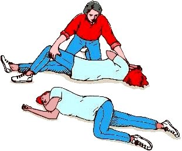

Ataque de epilepsia
Ocurre cuando una actividad anormal eléctrica en el cerebro causa un cambio involuntario de movimiento o función del cuerpo, de sensación, en la capacidad de estar alerta o de comportamiento.
La crisis puede durar desde unos segundos hasta varios minutos.
Que hacer en caso de un ataque de epilepsia
1 Conserva la calma, ya que una actuación precipitada puede ser peligrosa. Trata de que la persona no se lesione durante la crisis epiléptica, quitando objetos peligrosos de alrededor (aristas de muebles, objetos punzantes, etc) y colocando algo blando bajo su cabeza, para evitar que se golpee contra el suelo. También remueve lentes, audífonos, cintillos, ganchos para el pelo, etc.
2 Afloja la ropa apretada y coloca a la persona de costado. Tal como se muestra en la imagen, es decir con un brazo debajo de la cabeza, y la pierna flexionada para dar equilibrio, esto evitará que la persona se lastime al convulsionar. Esta se conoce como PLS (posición lateral de seguridad o recuperación).
3 NO intentes sostenerla para que no convulsione, ni le coloques nada en la boca. Tampoco se debe dar agua, alimentos o pastillas por la boca durante la crisis epiléptica o poco después puesto que un posible vómito con el conocimiento alterado puede ser muy peligroso.
4Observar la duración de la crisis epiléptica. En la gran mayoría de las ocasiones finaliza en dos o tres minutos, tras lo cual la persona se recupera gradualmente.
Se debe esperar al lado de la persona hasta que la crisis epiéptica termine. Dejar que descanse hasta que se recupere y comprobar que vuelve poco a poco a la situación normal.
Necesidad de atención médica urgente
Importante: La gran mayoría de las crisis epilépticas terminan de forma muy rápida y no es necesario trasladar a la persona con epilepsia conocida a un Servicio de Urgencias por la crisis epiléptica en sí. Se debe trasladar en las siguientes circunstancias:.
- Si la crisis epiléptica dura más de 5 minutos.
- Si la crisis epiléptica se repite en corto espacio de tiempo.
- Si no recupera por completo la situación previa, tras un periodo de tiempo prudencial después de la crisis epiléptica.
- Si ha habido un traumatismo importante durante la crisis epiléptica.
- Si la persona que ha sufrido la crisis epiléptica está embarazada.
- Si se trata de una persona que no sea epiléptica. En este caso no se conoce la causa y puede tener una enfermedad aguda que requiera un diagnóstico y tratamiento urgente (por ejemplo, meningitis, trombosis cerebral, intoxicación, etc.).